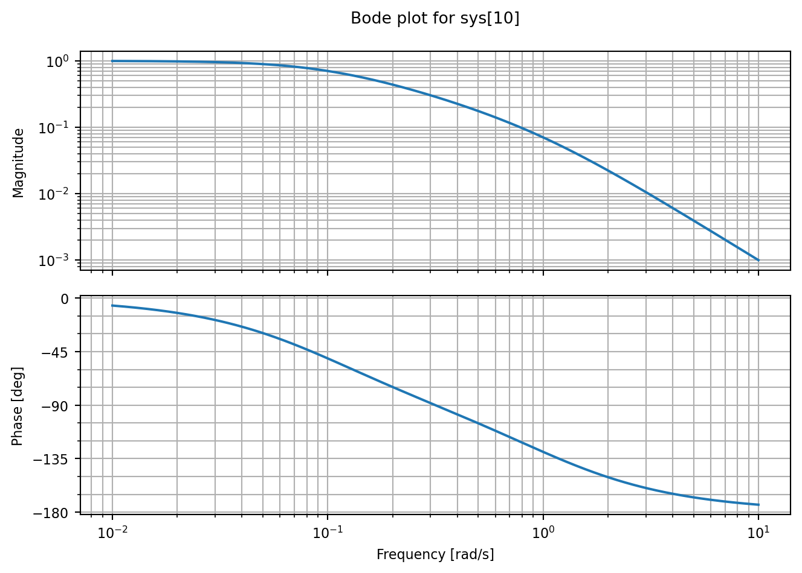
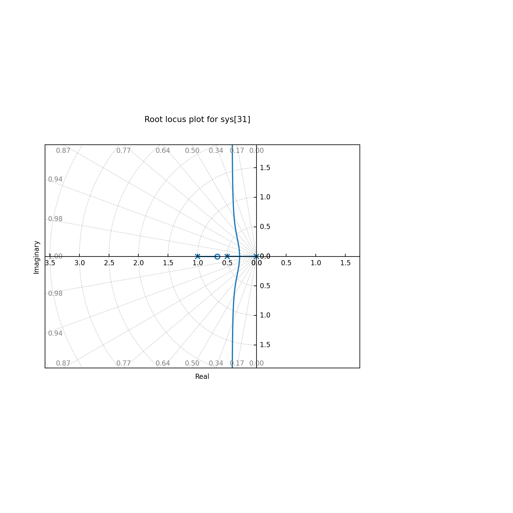

This demonstration takes advantage of the python-control package to illustrate tools available for computational / numerical process modeling and control. This package implements basic operations for modeling linear, time-invariant (as well as nonlinear, discrete, and stochastic) control systems. Find the documentation for an installation guide and tutorials here.\(^{[1]}\)
Code
# preamble to import packages (renamed using 'import <package> as <name>')import numpy as npimport control as ctrlimport matplotlib.pyplot as pltimport warningsfrom IPython.display import Markdown, display # to make HTML/Markdown play nicerwith warnings.catch_warnings(): warnings.filterwarnings("ignore", message="Ignoring fixed x limits") warnings.filterwarnings("ignore", message="Ignoring fixed y limits to fulfill fixed data aspect with adjustable data limits.")
Common Graphical Techniques
We’ll jump right in with some high-level plotting functionalities that control provides, namely in generating Bode plots and root locus diagrams.
Frequency Analysis - Bode Plots
Recall the utility of Bode plots. They are a graphical tool used to visualize how a given transfer function responds to an oscillatory input, of the form,
\[u(t) = A\sin({\omega t + \phi})\]
for a specified amplitude \(A\), frequency \(\omega\), and phase shift \(\phi\). The Bode plot shows the magnitude (amplitude ratio) of oscillations that will be observed in the output, as well as the response’s phase shift.
These plots quickly show us how “well” the dynamics of our system can keep up with this sinusoidal input, as a function of the incoming frequency of oscillation
Consider a transfer function \[G(s) = \frac{1}{(\tau_{1}s + 1)(\tau_{2}s + 1)}\]
with two poles \(p_{1}, p_{2}\) at \(s = -\frac{1}{\tau_{1}}, -\frac{1}{\tau_{2}}\) for \(\tau_{1}, \tau_{2} = 1, \ 10\).
With the transfer function properly constructed, we need only to call control.bode_plot() on it for a quick Bode diagram.
Code
s = ctrl.tf('s') # define 's' as a TransferFunction classt1, t2 =1, 10G1 =1/ ((t1*s +1)*(t2*s +1))ctrl.bode_plot(G1)

At this point, we’ve seen and approximated many Bode plots. The key takeaways are:
the amplitude ratio represents the ratio of the output signal’s frequency to that of the input signal. Once we reach a frequency where \(AR < 1\), then the output signal becomes more and more attenuated as we continue to increase frequency. In essence, the input begins oscillating so quickly that the output isn’t able to fully reach any maxima of the input – this is precisely the filtering effect we’ve discussed in the context of surge tanks that smooth incoming fluctuations in flowrate.
the phase shift stems from the finite dynamics of the process, sensor, control elements, etc. The overall system can’t instantaneously respond to the input, and this manifests as a delay (which is also a function of frequency). We care about the conditions under which we cross \(-180^{\circ}\) because at that point, our output signal is completely inverted relative to the input – maxima in input become minima in the output, which can be a problem for feedback schemes (depending on the magnitude at that point)!
Root Locus Diagrams
Root locus diagrams are graphical tools used to assess the stability of a system as one of its parameters is varried, usually the controller gain \(K_c\).
Here, we’ll look at one system from homework. Consider the following open-loop transfer function (HW#7):
for \(\tau_I = \frac{1}{2}, \tau_1, \tau_2 = 1, 2\).
We can then form the closed-loop response, and since it’s assumed to be a unity feedback loop (\(G_v = G_m = 1\)), then it collapses into a neater form:
\[G_{CL}(s) = \frac{L(s)}{1 + L(s)}\]
\[G_{CL}(s) = \frac{G_v G_c G_p}{1 + G_v G_c G_p G_m} = \frac{K_{c} \Big( 1 + \frac{1}{\tau_I s} \Big) \frac{1}{(\tau_1 s + 1)(\tau_2 s + 1)}}{1 + K_{c} \Big( 1 + \frac{1}{\tau_I s} \Big) \frac{1}{(\tau_1 s + 1)(\tau_2 s + 1)}}\]
This closed-loop had poles at \(s = 0, -1, -\frac{1}{2}\), a zero at \(s = -2\), a centroid at \(\sigma = \frac{1}{4}\), and the breakaway was \(s \approx -0.23\)
It’s then straightforward to generate an initial root-locus diagram using control.root_locus_plot()!
Code
Kc =1# placeholder gain to use in tf constructiont1, t2 =1, 2;# time constants in the process and for measurementtI =1/2# integral time constantGv =1;Gm =1;Gp =1/ ((t1*s +1)*(t2*s +1))Gc = Kc * (1+1/ (tI*s))L = Gv * Gc * Gp * Gm;ctrl.root_locus_plot((Gv * Gp * Gc) / (1+ L), grid =False, xlim = (-2.5, 1.5), ylim = (-3, 3));
Ignoring fixed x limits to fulfill fixed data aspect with adjustable data limits.

Important
Wait! It appears some features are missing, such as the trajectories of the poles \(p_1 = 0, p_2 = -\frac{1}{2}\) as they breakaway from the Re-axis and start diverging toward the Im-axis…
Numerical routines such as the root-finding needed to generate a root-locus diagram are sensitive to numerical precision. Also, generating a diagram for a complex closed-loop transfer function is going to be inherently more complicated than a rather simple function, so key features might be missed by whichever algorithms the code developer included to be used by default.
In the above scenario, you can increase the range of controller gains used in the calculations to capture the breakaway trajectories better, but this doesn’t seem to work directly with the control.root_locus_plot() function. It’s times like these where by-hand approximations are sometimes the more robust approach!
Phase and Gain Margins
Phase and gain margins are quantitative measures of relative stability of closed-loop systems, or their ‘robustness’ to model uncertainty and process variation.\(^{[2]}\)
These quantities essentially tell us how far away from marginal stability the system is, so that we can integrate some semblance of safety into operations.
Quickly, we will review a few definitions, and then introduce the newer ones.
(Open) Loop transfer function \(L(s)\) – the product of the controller transfer function \(G_c(s)\) with an overall process transfer function \(G(s)\) (which includes the physical process, any sensors/measurement devices, and control elements such as valves).
\[L(s) = G_c(s)G_v(s)G_p(s)G_m(s) = G_c(s)G(s)\]
Marginal stability – the point at which we observe sustained (non-decaying) oscillations in our output, when the input to the system is a sinusoidal function. \[1 + L(s=i \omega_u) = 0\]
Or,
\[L(s = i \omega_u) = -1\]
for an “ultimate” value of \(K_c = K_{cu}, \omega = \omega_{u}\), above which we become unstable, as the poles will begin moving into the right half of the Re-Im plane.
Phase crossover (or critical) frequency \(\omega_p\) – the frequency at which the phase of the loop transfer function becomes equal to \(-180 ^{\circ}\).
Gain marginGM – the factor by which we can scale/multiply the controller gain before the onset of instability
\[GM = \frac{1}{|L(i \omega_p)|}\]
Note
Remember that increasing \(K_c\) shifts the amplitude ratio of our transfer function upward on a Bode diagram, while leaving the phase shift unchanged. The opposite is true for a system with time delay; the phase shift will necessarily change, but the magnitude will be left unmodified!
A high gain margin corresponds to a system that is far away from instability, but there is a tradeoff, as our controller responds sluggishly.
A large phase margin is also a sign that the system is far from instability – there is a safety margin for how much time delay the system can handle before seeing sustained (or worse, growing) oscillations in the output.
Our controller has both P- and I-action, which will look like: \[G_c(s) = K_c (1 + \frac{1}{\tau_I s})\]
with a chosen value of \(\tau_I = 1/3\).
We are told the product of our process and controller gains are non-zero, e.g. \(K_c K > 0\), and from a previous example we want to look at the case where \(K_c K = 0.5\)
Code
K =1# loop transfer function (process) gainKc =0.5# controller gaint1, t2, t3 =1, 1/2, 1/3tI =1/3G = K / ((t1*s +1)*(t2*s +1)*(t3*s+1))Gc = Kc * (1+1/(tI*s))L = Gc * Ggm, pm, sm, wpc, wgc, wms = ctrl.stability_margins(L)ctrl.bode_plot(L)
As we might expect, there’s an initial overshoot, oscillation about the step value, and then the system settles to our setpoint with no steady-state error.
Now, let’s make use the calculated gain and phase margins to push this system to the brink of instability to confirm the behavior is as we expect!
In this scenario, \((K_c K)_{new} = GM(K_c K)_{old}\)
Code
t = np.linspace(0,25,num=100)L = L * gm # scale the original loop transfer function by the previously calculated gain marginresp = ctrl.step_response(L / (1+ L), t)resp.plot(plot_inputs='overlay', legend_map = ['upper left'], label = [f'$G_CL(t)$', f'$u(t) = M(t)$'])gm, pm, sm, wpc, wgc, wms = ctrl.stability_margins(L)
Notice in this table, that the phase crossover frequency \(w_{pc}\) did not change (indicating the phase shift of the system was unmodified), yet the gain crossover frequency \(w_{gc}\) did! Additionally, these two are coincident at \(\omega = \sqrt(2)\)
Also, we can see that \(GM = 1\), \(PM = 0^{\circ}\), indicating the gains can’t be scaled any further, and the system can’t handle any more time delay before becoming unstable.
Finally, just to hit the concepts home, we’ll simulate what happens when we increase the gains even further, despite having no wiggle room.
Code
t = np.linspace(0,25,num=100)L = L * (gm+0.05) # scale the loop transfer function by the gain margin plus some small valueresp = ctrl.step_response(L / (1+ L), t)resp.plot(plot_inputs='overlay', legend_map = ['upper left'], label = [f'$G_CL(t)$', f'$u(t) = M(t)$'])gm, pm, sm, wpc, wgc, wms = ctrl.stability_margins(L)ctrl.bode_plot(L)
Since we’ve pushed the gains of the system and controller too far, now our gain margin is a factor less than 1, and our phase margin is negative.
References
[1] S. Fuller, B. Greiner, J. Moore, R. Murray, R. van Paassen and R. Yorke, “The Python Control Systems Library (python-control),” 2021 60th IEEE Conference on Decision and Control (CDC), 2021, pp. 4875-4881
[2] Kravaris, C., & Kookos, I. K. (2021). Understanding Process Dynamics and Control. Cambridge University Press.
Footnotes
See Kravaris & Kookos, Ch. 17.2, Example 17.4, “PM and GM of a third-order system under PI control”.↩︎